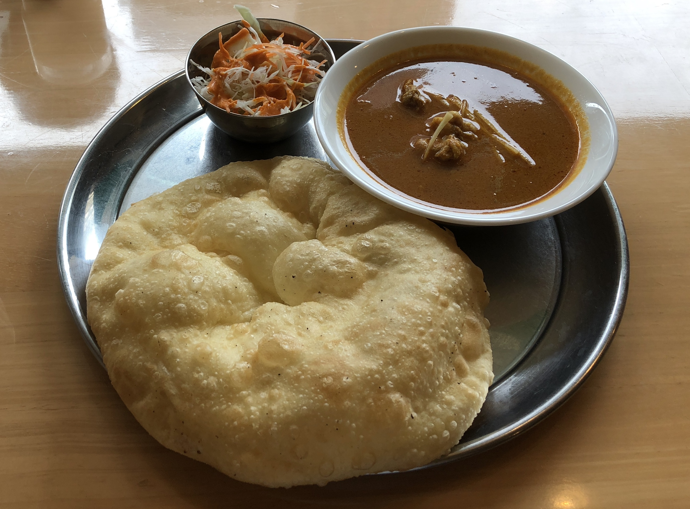

Curry

Ingredients
- 2 tablespoons vegetable oil
- 1/2-1 lbs meat, cut into bite-sized pieces (can use beef, pork, chicken, lamb or goat)
- 1 yellow onion, diced
- 3 cloves garlic, minced
- 2 teaspoons grated ginger root
- 1/2 to 2 tablespoons of garam masala, curry powder or a combo of both
- 2 cups broth (can use vegetable or chicken)
- 2 medium tomatoes, chopped, or 1 (15.5 ounces) can of diced tomatoes
- 1/2 cup heavy whipping cream, coconut milk or full-fat Greek yogurt
How to cook
- Searing the meat is a great way to build layers of flavor into your curry, but you’ll need to add it in batches to get a hard sear and prevent steaming. Heat the vegetable oil over medium-high heat in a large skillet. Add the meat in batches, browning it on all sides, about 5 minutes. It doesn’t need to be cooked through—there will be plenty of time for that later! Then, remove it to a plate and set it aside while you brown the rest of the meat
- Once the meat is finished browning, add the diced onion to the skillet and cook over medium-high heat until it has softened and starts to caramelize on the edges, about 5 minutes. There should be plenty of oil left in the pan, but you can add an extra glug of oil if you need
- Now the fun begins: add the garlic, ginger and spices. Blooming the spices is a crucial step to creating a successful curry, as it releases essential flavor compounds. You only need about 30 seconds here; you don’t want the garlic to brown and become bitter. You know it’s done when the aroma in the room becomes completely intoxicating
- Add the broth and tomatoes. Bring the mixture to a simmer and let the flavors meld for about 5 minutes. If you’re using meat, add the browned meat back to the simmering sauce and turn the heat down to low. Cover the skillet and cook for 5 to 10 minutes, until the meat is cooked through and tender
- Remove the curry from the heat and whisk in 1/2 cup heavy whipping cream, coconut milk or full-fat Greek yogurt to create an extra rich dish